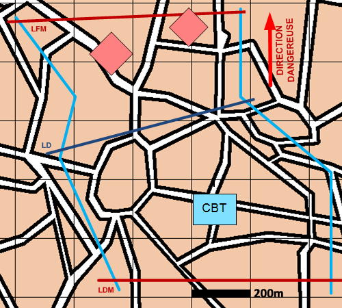

NIVEAU : Automate
ARME : Melee
MISSION : Attaquer
NIVEAU : Automate
ARME : Melee
MISSION : Attaquer
Schéma de modélisationAttaquer |
Paramètres obligatoiresFuseauZone dans laquelle progresser pour mener l'attaque. Direction Dangereuse Orientation privilégiée des capteurs. Ligne de débouché Ligne à partir de laquelle les unités vont attaquer. |
|
Paramètres optionnelsLigne(s) de coordination [LC]Ligne de début et fin de mission [LDM/LFM] |
||
 |
Fiches missions |  |